Free body diagram
Free body diagram: A special type of vector diagram used to study the magnitude and direction of forces acting on body
Newtons laws of motion
The entire concept of FBD revolves around the the following laws:
Every body continue to be in rest or motion unless acted upon by external force.
F= MA
For every force there is an equal and opposite force.
What is weight?
Weight is a force
Mass x Gravity = F , Kg m/s²=N
This means a 70kg person will have a weight of 700N
This is not important for day to day practice
Levers
Lever is a machine designed to move objects
It has got a bar and a fulcrum.
3 classes of levers
Class 1
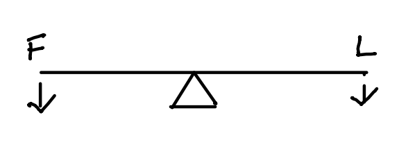
e.g.: see-saw, scissors
Hipjoint
Class 2
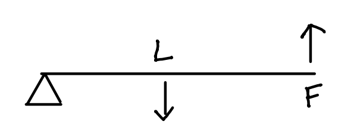
e.g.: Stapler, Doors
Knee joint in flexion
Class 3
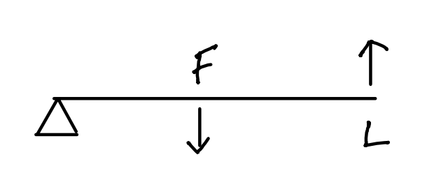
e.g.: Broom
Jaw, Forearm in flexi
Vector
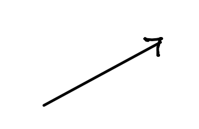
It is the diagrammatic representation of force. Has got magnitude and direction
Moment
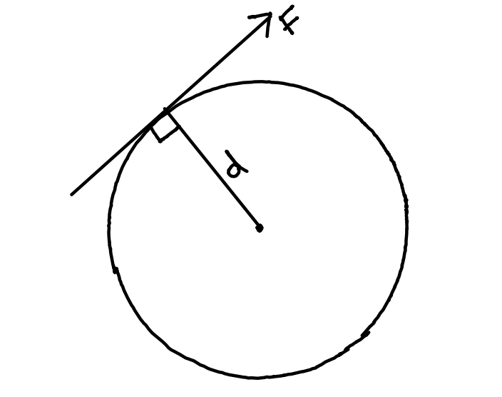
A force applied at a distance from pivot point will cause segment to rotate. The distance is called moment arm and the rotational effect is called turning moment.
Turning moment = F x moment arm
Turning moment is also called torque.
F x d = Turning Moment or torque
Assumptions
FBD is a 2d simplification of a 3d structure
We are using vectors and moments
Body we draw should be in equilibrium
Bones are rigid rods
Joints are frictionless hinges
There are no antagonistic muscles
Fore act through the centre of muscle
Muscle act only through tendon
JRF is always compressive
Hip FBD
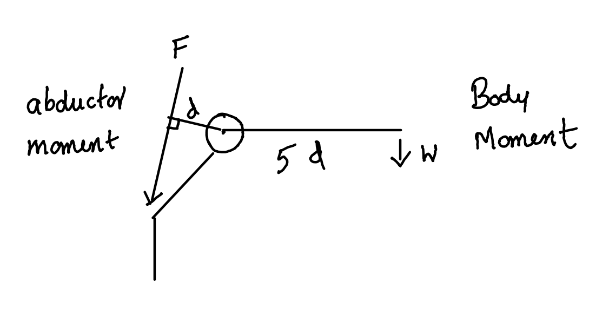
Abductor moment = body moment in equilibrium
Fd = w x 5d
F = 5w
*w is generally taken as 5/6 of the body weight as the person is standing on one leg. Weight of one leg is generally taken a 1/6 body weight.
*F is the abductor force of contraction.
JRF
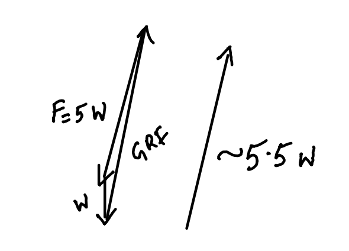
How to reduce JRF in hip?
Carry weight on same side!
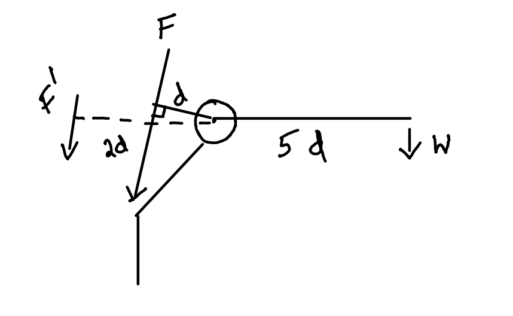
F x d + F’ x 2d = w x 5d
F + F’ = 5w
F = 5w - F’
So the abductor force of contraction required is reduced from F to F-2F’
Carry stick on the opposite side!
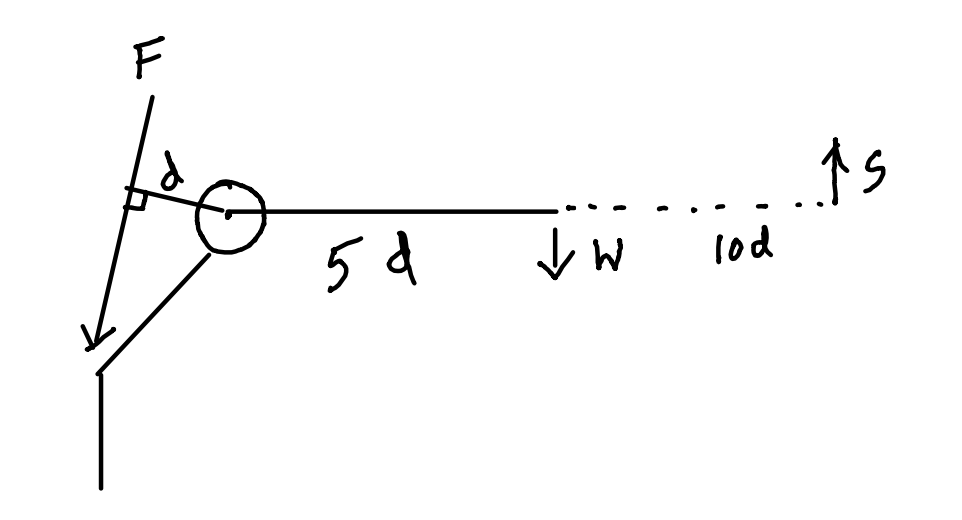
Pressing the stick on to the ground will produce an equal and opposite ground reaction force, s.
F x d = w x 5d - s x 10d
F = 5w - 10s
So the abductor force of contraction required is reduced from F to F-10s
Ankle FBD
It is important to keep the ankle in dynamic equilibrium
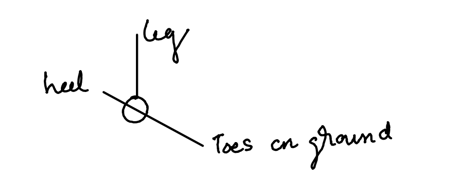
This essentially make ankle a reverse hip joint, another type one lever
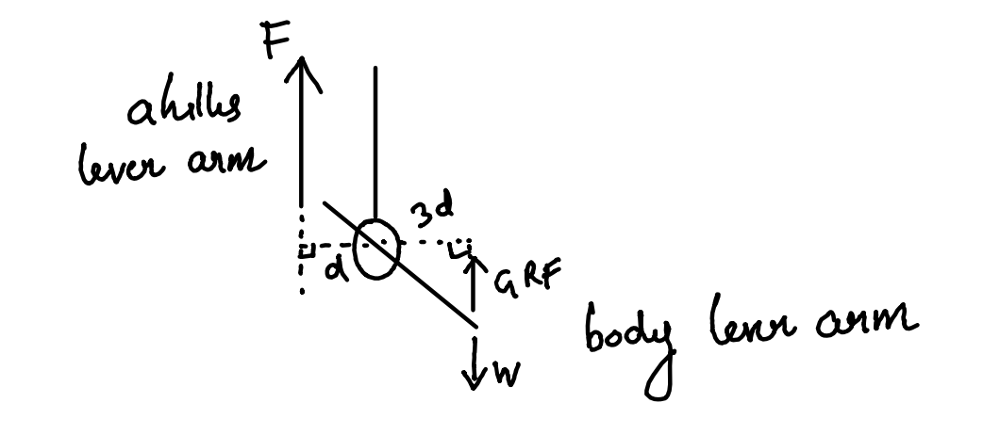
F x d = w x 3d
F = 3 w
JRF ankle
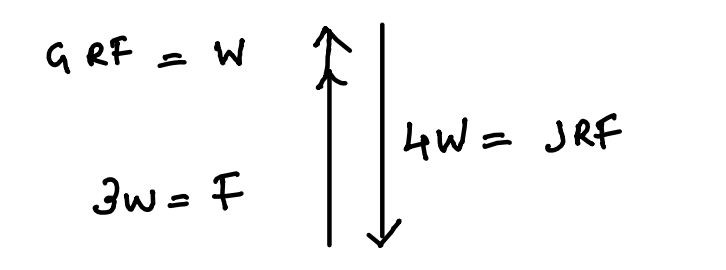
Spine FBD
Assume a man bending forward and trying to take a brick. Here the motion segment is again acting as a type 1 lever.
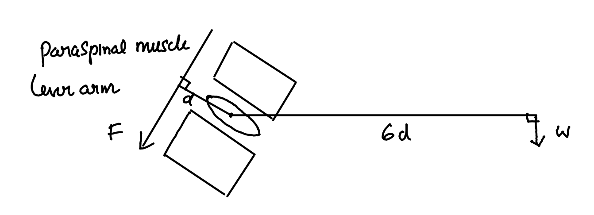
JRF Spine
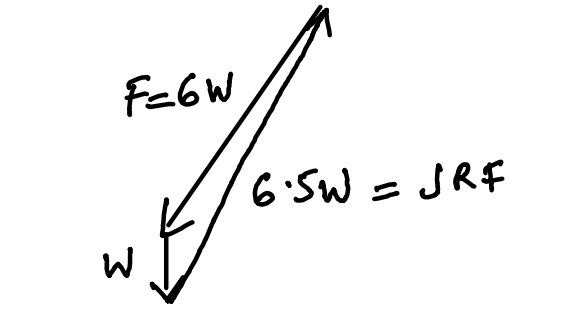
Cervical Spine FBD
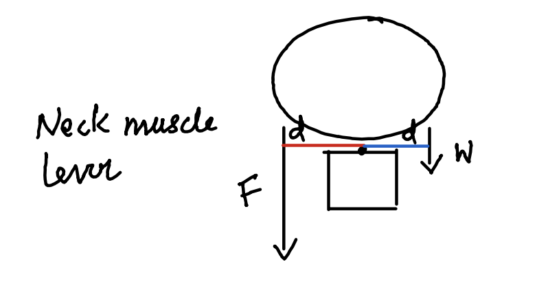
F x d = w x d
F = w
Patello femoral joint FBD
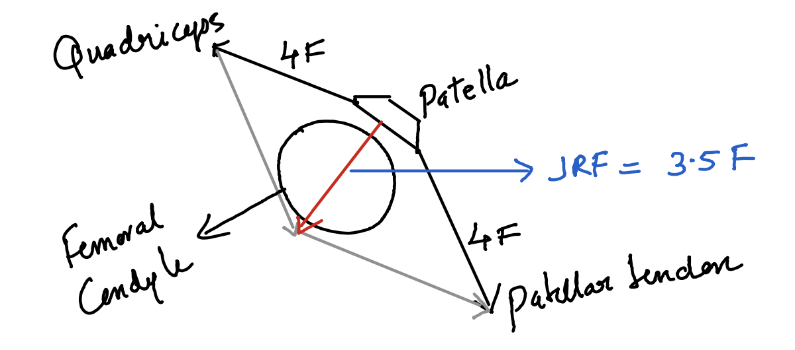
The quadriceps and patellar tendon are in equilibria, with a force 4F on either direction. The JRF is less than 4F. JRF is maximum when in flexion and negligible in extension of knee joint.
Knee joint FBD
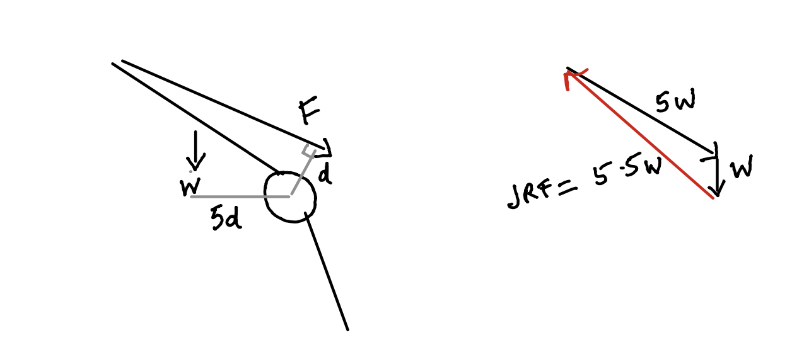
We can see that when a person is about to raise from a chair, knee joint acts as a second order lever. Weight is acting down from the middle of the thigh and the quadriceps force F is directed towards the knee.
Shoulder joint FBD
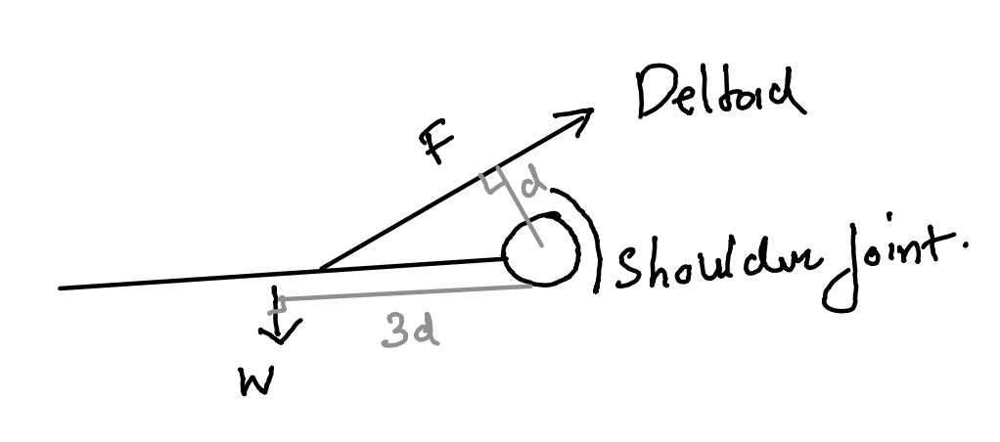
Here we can see that shoulder is a third order lever.
Elbow and fingers FBD
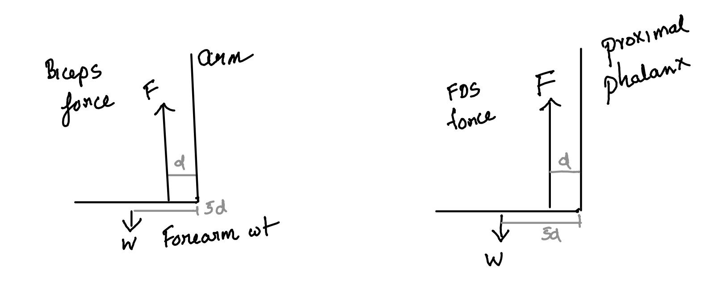